玩转iOS开发：《CocoaPods》安装及使用教程
作者感言
这次的
CocoaPods的Review，让我知道了新版的CocoaPods和旧版的CocoaPods的区别, 在声明Podfile文件中, 需要加入对应的target才可以执行, 我个人感觉这个操作有些不太友好, 但他们要这么做, 我也没办法, 毕竟我只是小白用户而已.最后:
如果你有更好的建议或者对这篇文章有不满的地方, 请联系我, 我会参考你们的意见再进行修改, 联系我时, 请备注CocoaPods** 如果觉得好的话, 希望大家也可以打赏一下~嘻嘻~祝大家学习愉快~谢谢~**
介绍
在
iOS项目中使用第三方类库可以说是非常常见的事，但是要正确地配置他们有时候是非常繁琐的事情，幸运的是CocoaPods是一个很好的解决方案。
什么是CocoaPods
CocoaPods是OS X和iOS下的一个第三类库管理工具，通过CocoaPods工具我们可以为项目添加被称为Pods的依赖库（这些类库必须是CocoaPods本身所支持的），并且可以轻松管理其版本。
CocoaPods意义体现在两个方面。
* 第一，在引入第三方库时它可以自动为我们完成各种各样的配置，包括配置编译阶段、连接器选项、甚至是ARC环境下的-fno-objc-arc配置等。
- 第二，使用
CocoaPods可以很方便地查找新的第三方库，这些类库是比较“标准的”，而不是网上随便找到的，这样可以让我们找到真正好用的类库。接下来我们将介绍
CocoaPods的使用。
CocoaPods的核心组件
CocoaPods是用Ruby写的，并划分成了若干个Gem包。
CocoaPods在解析执行过程中最重要的几个包的路径分别是：
*CocoaPods/CocoaPods
*CocoaPods/Core
*CocoaPods/Xcodeproj
CocoaPods / CocoaPod：这是面向用户的组件，每当执行一个pod命令时，这个组件将被激活。它包括了所有实用CocoaPods的功能，并且还能调用其他gem包来执行任务。
CocoaPods / Core：Core gem提供了与CocoaPods相关的文件（主要是podfile和podspecs）的处理。
Podfile：该文件用于配置项目所需要的第三方库，它可以被高度定制。本文中我们主要在这里做动作。
Podspec：该文件描述了一个库将怎样被添加进工程中，.podspec文件可以标识该第三方库所需要的源码文件、依赖库、编译选项，以及其他第三方库需要的配置。
CocoaPods / Xcodeproj：这个包负责处理工程文件，它能创建以及修改.xcodeproj文件和.xcworkspace文件。它也可以作为一个独立的包使用，当你要编写修改项目文件的脚本时，可以考虑使用CocoaPods/Xcodeproj。
更换Ruby源
检查
Ruby环境，一般来讲Mac OS都是自带Ruby环境的，在Terminal中输入命令即可查看Ruby的版本号
ruby -v
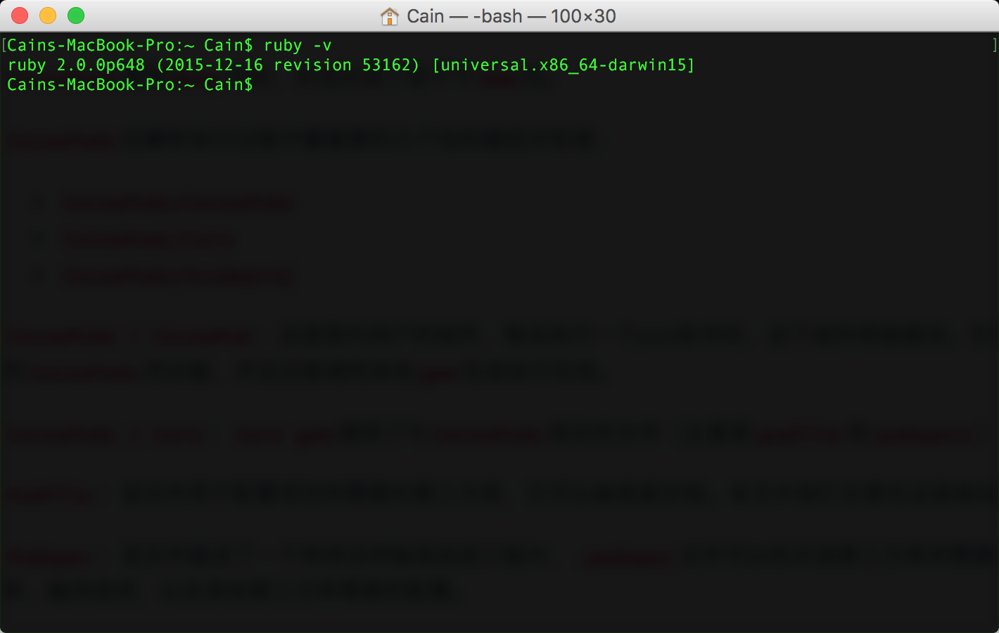
切换
Ruby源地址
gem sources --remove https://rubygems.org/

#等有反应之后再敲入以下命令
gem sources -a https://ruby.taobao.org/
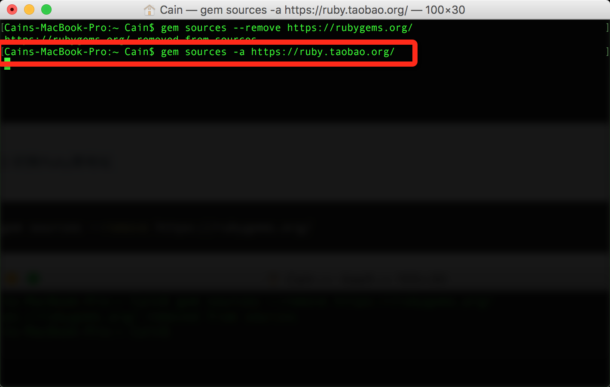
#为了验证你的Ruby镜像是并且仅是taobao，可以用以下命令查看：
gem sources -l

安装CocoaPods
现在我们在
Terminal中输入以下命令, 输入机子的登录密码(没有密码的直接回车, 忘记密码的也别问我, 我也不知道怎么办), 等待自动完成安装就可以了
sudo gem install cocoapods
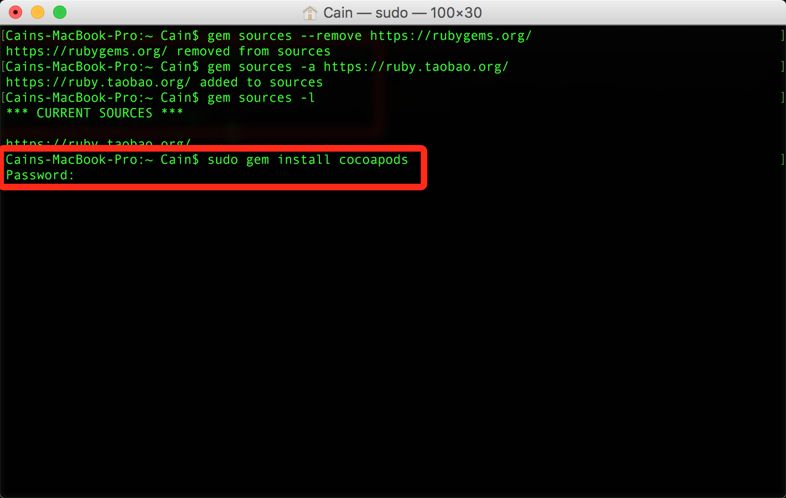
安装完成之后就会有以下的提示
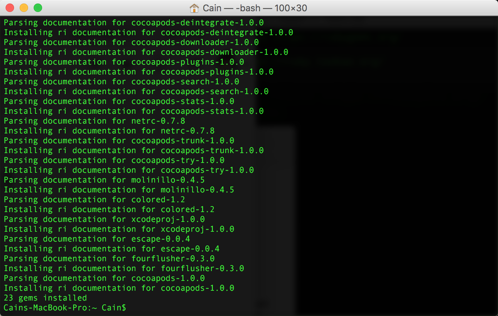
如果你不确定自己是否安装成功, 可以输入下面这个命令去查看
pod
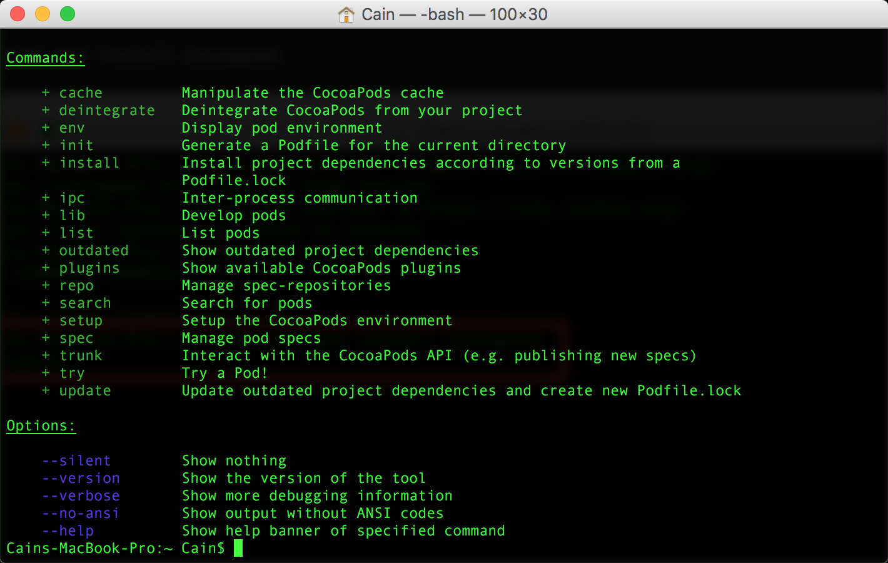
如果有以上的提示, 那就证明你是安装成功的, 如果安装不成功, 继续输入安装命令
使用CocoaPods
创建
Xcode项目(怎么创建Xcode项目这里我就不说了), 然后打开Terminal直接cd到工程的根目录中, 这里我使用一个Demo
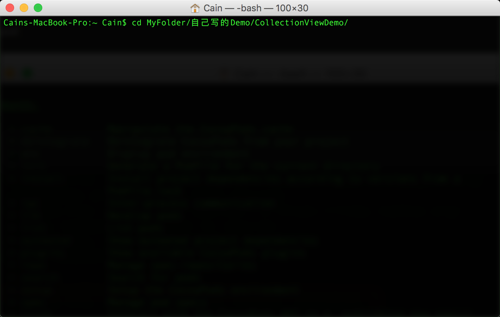
Xcode项目中创建Podfile文件, 且编辑

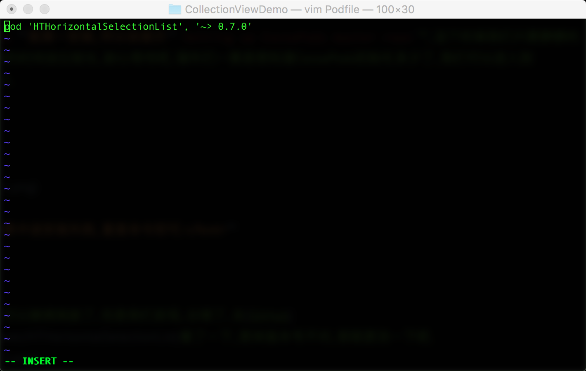
保存
Podfile文件, 直接运行CocoaPods的命令, 如果该开源项目有其他项目的依赖,CocoaPods会自动下载对应的依赖项目.
PS: 里面的两端文字并不是自己写得, 是需要去GitHub里查看该项目最高支持iOS版本是多少, 以及该开源项目是第几个版本.
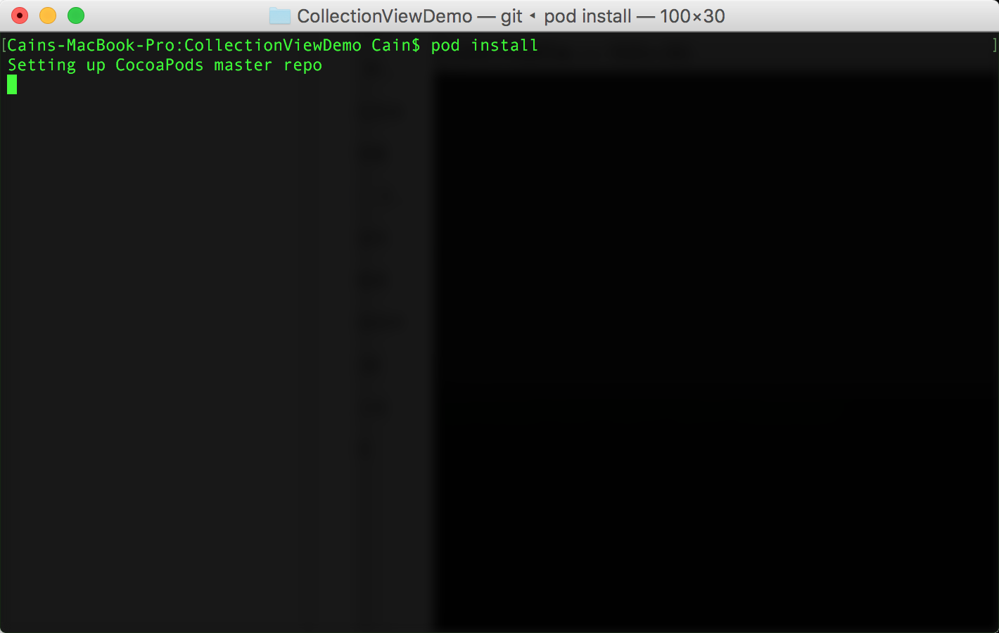
由于我们的
CocoaPods是第一安装, 所以会提示Setting up CocoaPods master repo, 这个时候我们只要静静的等待它初始化完, 这个等待的时间会比较长, 耐心等待吧, 骚年们~~要是想知道CocoaPods初始化多少了, 我们可以进入到CocoaPods的目录, 然后输入
du -sh

PS: 如果中途安装失败, 重复命令即可.
初始化结束之后, 我们就可以继续捣鼓了, 但是我们发现, 出错了, 去CocoaPods官网看了一下, 原来是少添加了一个指定的
target, 这个target是在哪里获取呢? 下面看图~~
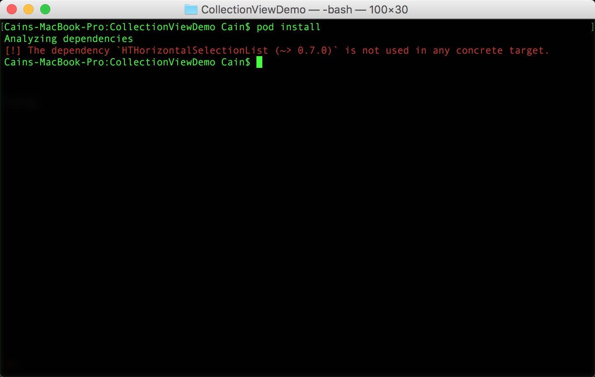

然后我们再次打开
Podfile, 编辑它, 保存, 再次install
target 'CollectionViewDemo' do
pod 'HTHorizontalSelectionList', '~> 0.7.0'
end

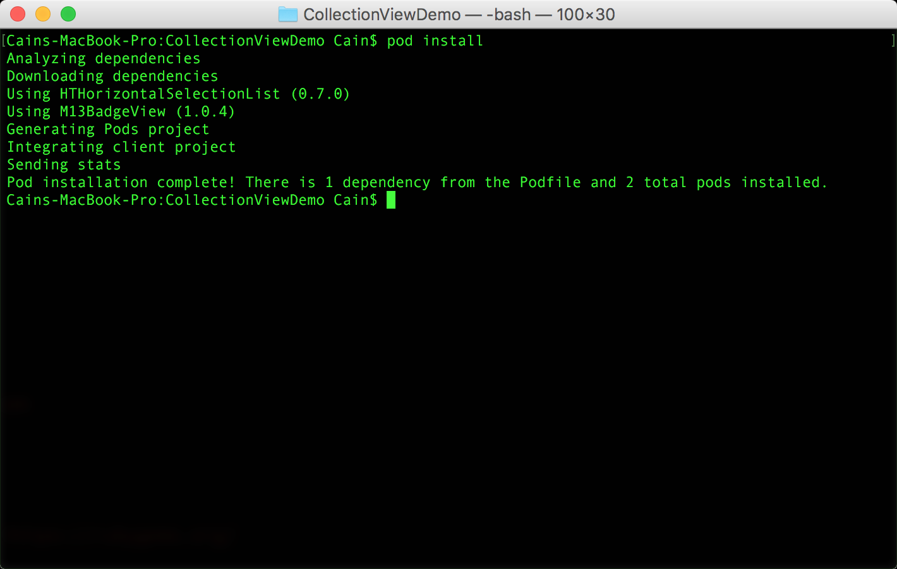
OK, 成功了, 我们会看到工程里多了一些文件, 而我们再也不会运行
.xcodeproj工程文件, 而是运行.xcworkspace
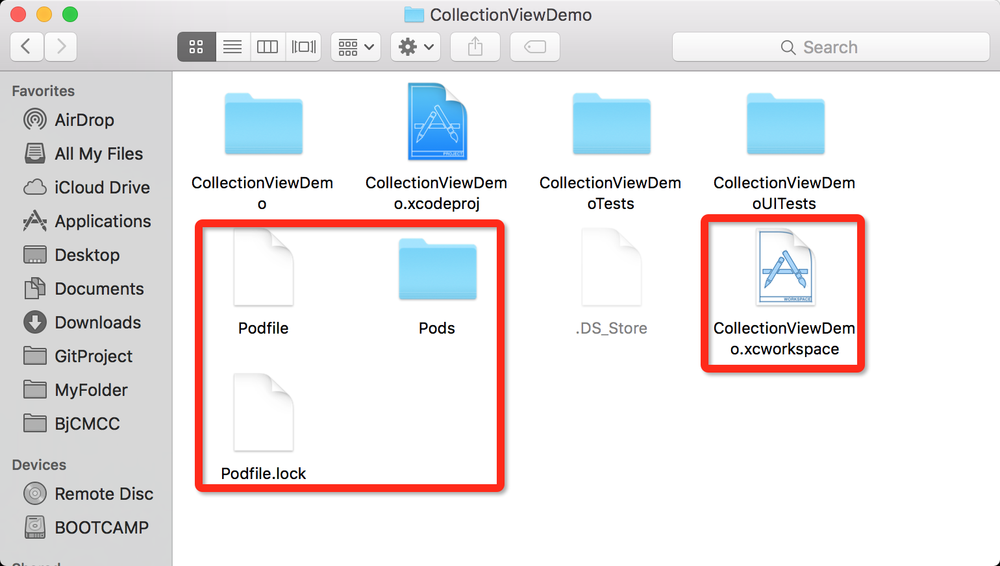
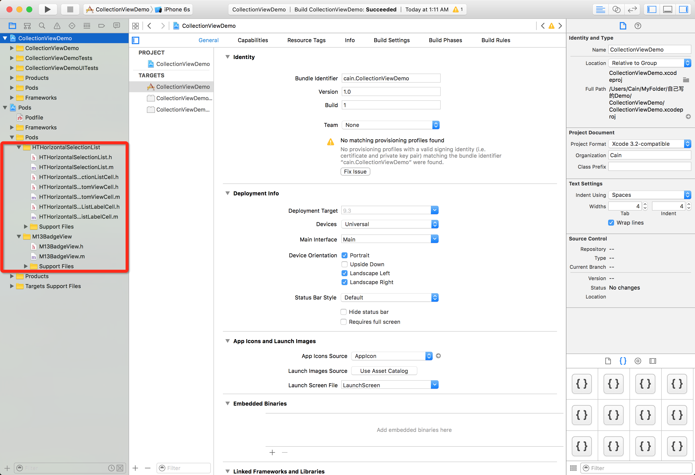
关于怎么去使用第三方的库这里我就不需要再去说了, 大家都懂的
升级CocoaPods
先更新gem
vim
sudo gem update —system
删除rubygems源
vim
gem sources --remove https://rubygems.org/
添加ruby淘宝源
vim
gem sources -a https://ruby.taobao.org/
测试源是否正确, 和刚开始安装时一样
vim
gem sources -l
安装CocoaPods
vim
sudo gem install cocoa pods
pod setup
查看CocoaPods版本
vim
pod --version